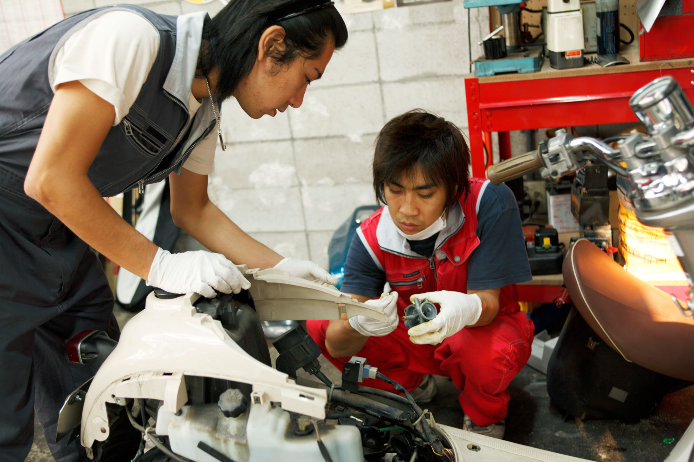
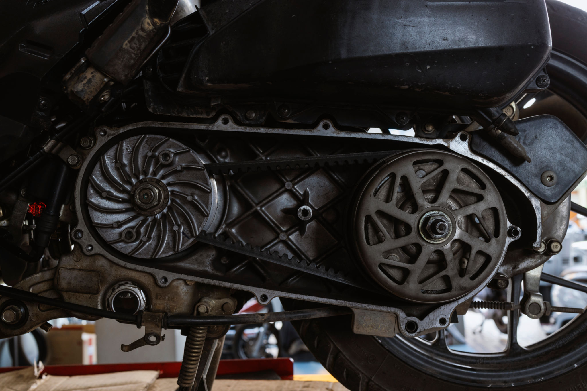
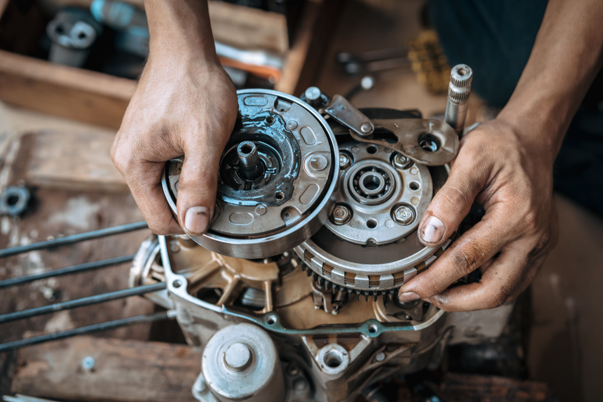
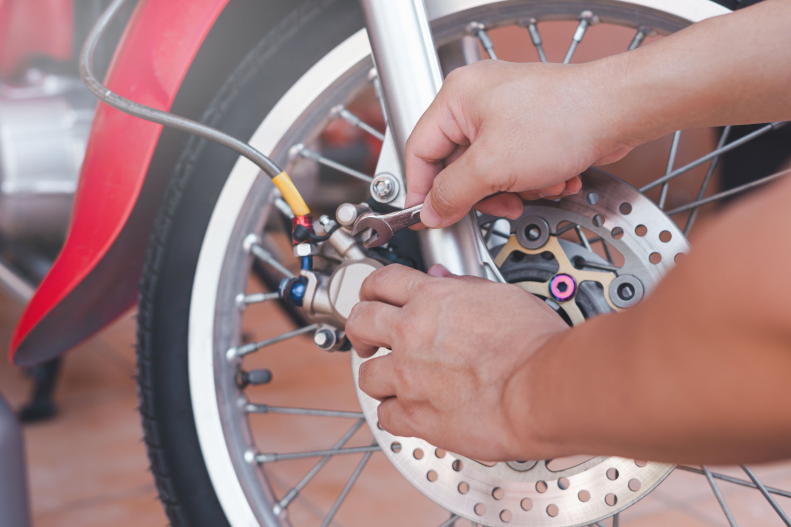
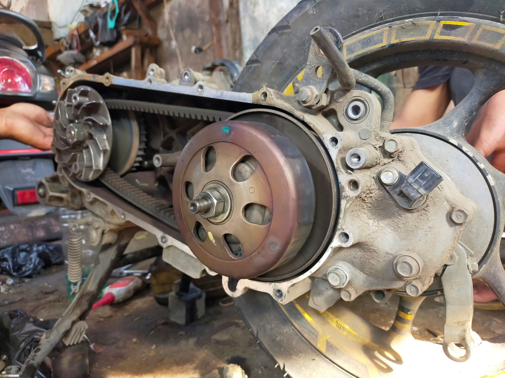
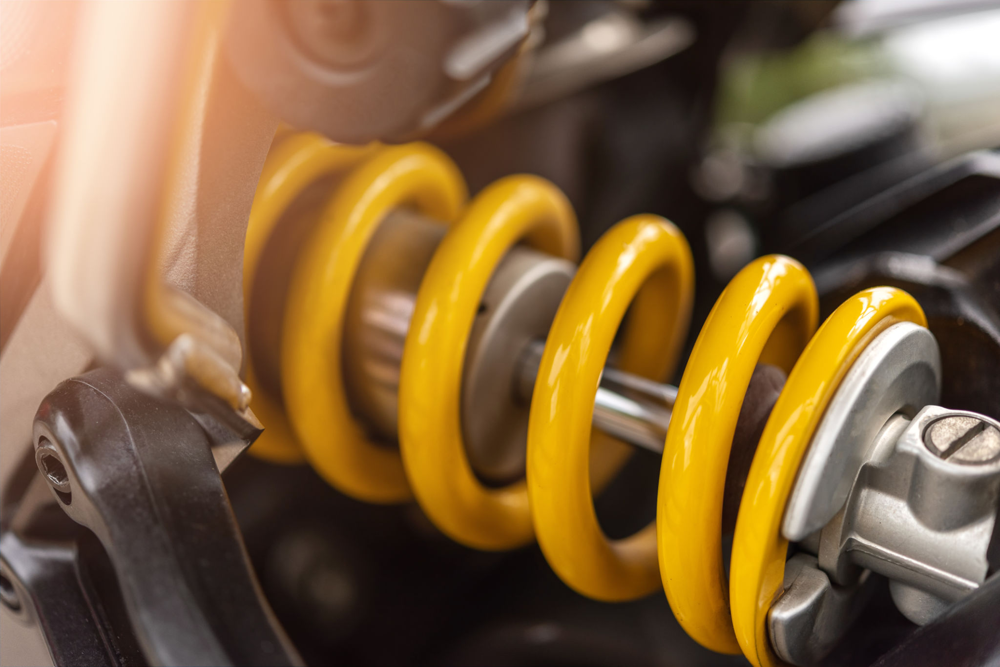
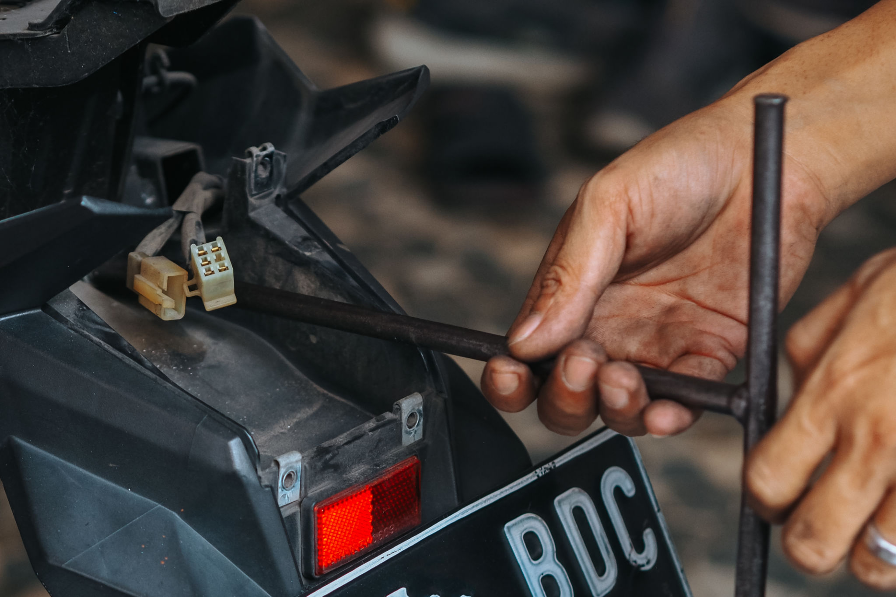

LAYANAN SEPEDA MOTOR
- Konsultasi Perawatan Sepeda Motor – saran ahli untuk menjaga performa dan umur panjang 
- Servis Sepeda Motor Komprehensif – dari ringan hingga overhaul mesin 
- Optimasi Kinerja Kendaraan Bermotor – untuk handling, akselerasi, dan efisiensi
- Perbaikan Mesin – mengembalikan kondisi mesin seperti baru 
- Optimasi Sistem Pengereman – pengereman lebih responsif dan aman 
- Perbaikan CVT – akselerasi halus dan suara lebih senyap 
- Peningkatan Sistem Suspensi – kenyamanan berkendara lebih optimal 
- Perbaikan Kelistrikan – mulai dari accumulator, CDI/ECU hingga lampu dan starter elektrik 

LOKASI KAMI
Kami berada di area kampus Institut Teknologi Sepuluh Nopember (ITS), Surabaya.
Kontak
Email: autoprimeservis@gmail.com
Instagram: @autoprime123